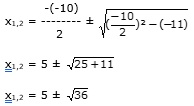

Aufgabe 73 = 1 = 1 |2 Mit (a - b)2 = a2 - 2ab + b2 und a = und b = x + 5 - 2 + 2x + 3 = 1 3x + 8 - 2 = 1 |-1 3x + 7 - 2 = 0 |+2 3x + 7 = 2 | 2 (3x + 7)2 = 4(x + 5)(2x +3) 9x2 + 42x + 49 = 4(2x2 + 3x + 10x + 15) 9x2 + 42x + 49 = 4(2x2 + 13x + 15) 9x2 + 42x + 49 = 8x2 + 52x + 60 |-8x2 x2 + 42x + 49 = 52x + 60 |-52x x2 - 10x +49 = 60 |-60 x2 - 10x - 11 = 0 p, q - Formel p = -10 ; q = -11  x1,2 = 5 ± 6 x1 = 5 + 6 = 11 x2 = 5 - 6 = -1 Bei Wurzelgleichungen muss man immer eine Probe machen, da das Quadrieren keine Äquivalenz- umformung ist. Es können sogenannte Scheinlösungen hinzukommen. Probe für x = 11: = 1 4 - 5 = 1 -1 = 1 falsche Aussage, deswegen ist x = 11 keine Lösung der Gleichung. Probe für x = -1 = 1 2 - 1 = 1 1 = 1 wahre Aussage, deswegen ist x = -1 eine Lösung der Gleichung.